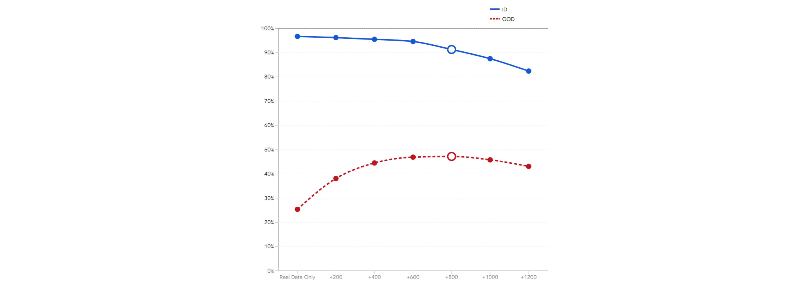

ViMoGen: Enhancing VLA Post-Training via Kinematics-Aware Video Synthesis
Figure 1

Qualitative comparison between GigaWorld and ViMoGen on real-robot interaction generation.
We compare GigaWorld and ViMoGen on the task “put banana on plate.” In the GigaWorld results (top), the contact region shows visible distortion, and the manipulation trajectory is less faithfully aligned with the instruction. By contrast, ViMoGen (bottom) generates more stable contact dynamics and a manipulation process that more closely matches the intended task. This comparison qualitatively suggests that introducing an explicit motion prior can improve interaction-region stability and instruction-conditioned generation.
Figure 2

Effect of the synthetic-data mixing ratio on downstream policy performance for $\pi_{0.5}$.
We study how the amount of synthetic data mixed with real data affects both in-distribution (ID) and out-of-distribution (OOD) performance of $\pi_{0.5}$. As the synthetic ratio increases, OOD performance improves substantially at first, reflecting the benefit of added diversity and broader coverage, and then gradually saturates. In contrast, ID performance remains relatively stable in the low-to-moderate mixing regime, but begins to decline as more synthetic data is added, indicating the increasing influence of synthetic bias and artifacts. This result highlights a fundamental ID–OOD trade-off in synthetic-data augmentation for $\pi_{0.5}$.
Figure 3

Representative failure cases involving local physical inconsistencies.
We show two qualitative examples from more challenging manipulation tasks, including closing the lid of a box (top) and flipping a pot upright in the sink (bottom). Although the generated rollouts remain globally plausible, failures may still occur in the form of locally inconsistent geometry or interaction details, such as distorted contact regions or physically implausible object-tool interactions. These examples illustrate a current limitation of ViMoGen on more complex contact-rich behaviors. While KFT helps alleviate such failures to some extent by introducing a stronger motion prior, and DAG filters many low-quality samples, some borderline cases still persist. Improving physical consistency in these challenging cases remains an important direction for future work.